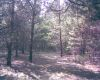
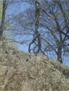
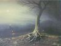
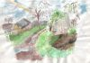

Людмила Темчина - современный поэт и прозаик. Пишет со школьных лет. Печаталась в альманахах "Муза", "Литературный Кисловодск", сборниках "Созвучие", "Пущинская лира" и др. Стихи Людмилы о жизни, о природе, о родной земле.
Людмила предоставляет читателю сборник "Татьянин день". В него вошли стихи, как уже публиковавшиеся, так и новые, а также рассказы.
СТИХИ
По крыше - стук, и в лужах - стук,
и небо - в черных тучах.
а кто ко мне стучится - друг,
Иль путник невезучий?
Осенний дождь. Воде нет дна.
Снежинки в лужах тают.
Сижу у темного окна
И о весне мечтаю.
А дождь идет. Осенний дождь.
Шумят косые струи.
Спроси меня: Чего ты ждешь?
Тебе в ответ скажу я,
Что жду, когда дожди пройдут,
Когда отвоет вьюга,
Когда я, дверь открыв на стук,
Впущу весну как друга.
Зеленая машина проехала по грязи,
Зеленая машина исчезла там, вдали.
Скажи, а та машина тебе знакома разве,
И что на той машине с собою увезли?
Неправда, ту машину не видела ни разу,
Но вижу - расстаемся мы с нею навсегда.
Зеленая машина везет с собой по грязи
Безоблачное детство. И я вхожу в года.
И промелькнув огнями, промчится словно ветер.
Никто, никто не сможет ее остановить.
Уходит вдаль машина. И мы на ней не едем.
Осталось лишь мгновение
последнее
ловить.
Что-то мне на месте не сидится,
Все вперед мне хочется взглянуть.
И летит моя большая птица -
Начинает свой далекий путь.
- Знай, что будут взлеты и провалы,
И победы будут нелегки.
Но все мчится птица в небе алом,
Лишь глаза горят, как маяки.
- Ты лети туда, где светит солнце,
Где сверкает на траве роса,
Где мой светлый день еще не кончен,
А лишь только-только начался.
Смотрите, звездопад!
И звезды небо полосят.
Чего они хотят?
Что в небе не сидится?
Хочу я на ладонь их взять,
Но нет - они тотчас сгорят,
А может быть, взлетят опять,
Как в непогоду - птицы?
Ох, этот звездопад!
Летают звезды наугад -
Их хмурый ветер тушит.
И мысли бродят невпопад,
Лишь искры грустных серенад
Мне наполняют душу.
Ледок чуть тронул лужу под окном,
Шумит листва над проводами.
И солнце борется уже с трудом
С ноябрьскими холодами.
А я иду по тихой мостовой,
И отражаюсь в каждой луже,
И шум берез с оставшейся листвой
Как музыку готова слушать.
Ноябрь. Гуляет стужа во дворе,
И зол, и грустен ветер грозный.
И машет на прощанье осень мне
Платком своим морозным.
Ах, какая вокруг темнота!
Даже тени от дня не осталось.
Мне сказали снега: Не мечтай!
Ну а мне еще так мечталось.
Что-то странное в сердце влилось -
От того то прохладно, то жарко.
Мне ветра говорили: Брось!
Ну а мне почему-то жалко...
Разливайся, моя печаль,
По огромным дорогам неровным.
Ты сказал мне тогда: Прощай!
Ну а я не сказала ни слова.
И опять мне приснился май,
Снова музыка слух пленила,
Сердце крикнуло: не забывай!
Ну а я уже все забыла.
Был воздух прозрачен и сыр,
А лед - по-осеннему ломкий.
Летели во все концы
Слов звенящих обломки.
Где-то дождь моросил,
И в листьях прятался ветер.
В старом парке часы
Пробили вечер.
Как хорошо, что это-сон!
А значит, не было печали.
Не мы стояли и молчали,
Смотря на темный горизонт.
И снег неведомо откуда
Не опускался на траву.
Как хорошо, что наяву
Я очень скоро все забуду.
По синему небу снежинки летают.
Еще догорает луна одиноко,
А где-то светает,
И сны мои тают,
И сны улетают в холодные окна.
Давайте ж проснемся! Давайте ж помчимся
По улицам мокрым, огромным и синим.
И тихо кому-то в окно постучимся
Летящей снежинкой.
Пускай заискрится земля под ногами.
Ну что ты молчишь и грустишь почему-то?
Смотри-ка, какое прекрасное утро,
И в небе снежинки смеются над нами.
Так пусть над землей этот смех разнесется,
И вмиг все обиды как льдинки растают.
Вот-вот над домами поднимется солнце,
А в небе снежинки летают.
Опять в бездонных лужах листья мокнут,
Изнемогая от холодного дождя.
Как стало душно вдруг! Давай откроем окна,
И ты мне скажешь что-то, уходя.
И те слова, что так давно просились,
Вдруг вылетят - свободно и легко.
А на дворе такая сырость,
Что хочется до туч достать рукой.
В тот вечер призрачный была
Земля, остывшая от зноя,
И небо черное, ночное
Луна прожектором прожгла.
И были улицы пусты.
А впрочем, было все, как надо,
И мы носились до упада,
И не боялись темноты.
Вдруг исчезал куда-то страх,
И в час, когда и шорох слышен,
Прозрачный шар к нам падал с крыши,
И звонко лопался в руках.
А мы носились, словно лани,
Могли Луну рукой достать.
Сбывались тайные желанья,
И так хотелось помечтать.
И мысли были так просты! -
Нам были улицы просторны,
Сияли звезды в небе черном,
Подмигивая с высоты.
И мне бы приотстать тогда,
Земли почувствовать прохладу...
А впрочем, было все как надо
В тот летний вечер, в те года.
Раз предложила туча мне
С ней прокатиться по луне.
Я согласилась. А потом
Я пол-луны нашла в кармане.
В тот день земля плыла в тумане
И пахло розовым дождем.
Листья, листья желтые
В воздухе кружатся,
Но недолго листьям
Над землей лететь.
Я прошу на миг их
В небе задержаться.
Только б мне увидеть.
Только б мне успеть.
Но не остановишь
Золотые листья -
Видно, очень хочется
На земле застыть.
Осень разбросала
По дорогам кисти
И уже рисует.
И ничем не смыть.
На дворе росла трава,
На траве - охапка дров.
Мы стояли у столба
Под разбитым фонарем.
Мы бродили до утра,
Перебарывая сон.
На дворе трава росла,
А дрова манили в дом.
Неужели, неужели -
Загудели провода,
И упала вдруг звезда
На холодные панели.
Мы сидели и глядели
На пропавшую луну.
Ветер листья подтолкнул,
И тогда они взлетели.
В тишине ли, в темноте ли
Крик над пропастью повис.
Птицы в небо сорвались,
И уже достигли цели.
Сегодня ветер листьями шуршал,
Оставив мне просвет в оконной раме.
А солнце разбросалось над дворами
И падает на крыши, не спеша.
Моя любовь - на лавке у окна.
Моя любовь со мной играет в прятки,
И я гляжу на солнечные грядки,
Где репа так нежна и зелена.
И тихо. Слышно как трава растет,
И бабочки летят на куст сирени.
А ветер треплет книгу на коленях -
Никак страницы нужной не найдет.
Моя любовь то вспыхнет, то зайдет.
Нам встретиться никак не удается.
И ветра нет. Осталось только солнце.
И вишня, что в саду моем цветет.
Однажды Вовка - это было днем
Развеселился - это было странно.
И он сказал, что небо за окном
Сегодня передернуто туманом.
И я тогда ни строчки не пиша
И презирая алгебру событий,
Сказала, что погода хороша,
Сказала, что сейчас нам надо выйти.
И мы пошли под проливным дождем
И, кажется, до ниточки промокли
И мне взгрустнулось - это было днем.
А Вовка босиком по лужам шлепал.
Солнечные зайчики скачут по клеткам лестниц.
Сегодня кончилось лето, и листья падают вниз.
Высокая семиклассница прощалась с коротким детством.
Высокая семиклассница вступала в большую жизнь.
Веселая пионерка всех переросла за лето,
И кажется ей мальчишки - беспечные малыши.
А ты начерти на асфальте восемь неровных клеток,
И на стене шершавой "А+К" напиши!
Она, загибая пальцы, считает сто красных машинок,
Надеясь, что тот ей приснится, при ком краснеет как рак.
Но он куском промокашки стреляет в нее из резинки,
И, вытирая слезы, она ему шепчет: "Дурак!".
А ты улыбнись нечаянно, как ни в чем ни бывало,
Я б о своем рассказала, но дело вовсе не в том.
Сегодня и я в печали - сегодня лето кончается.
Но развевается галстук на шее прощальным костром.
Эй, нарушьте тишину,
Не тяните, позвоните,
Два конца соедините,
Руку к трубке протянув.
Я сама бы, да никак
Не набрать мне этот номер,
Потому-то в нашем доме
Правит смертная тоска.
Пусть и сплетен злой навет,
И тупое равнодушье
Вмиг рассеет и разрушит
Лишь короткое "Привет!".
Не пора ли нам пробить
Эту каменную стену?
Жду и верю в перемену.
Жаль, что этому не быть.
Пока сидели мы в тепле,
За окнами ветра завыли,
Оставив на моем стекле
Следы доледниковой были.
Не подходи! Со всех сторон
Морозы и метели злые.
Не верь романтике стихии.
Она обманчива как сон.
Надо мной листопад,
И его ты рукою потрогай.
Как он ярко горит!
Листья кружатся в сонном бреду.
Так давай-ка сейчас
Мы с тобою пройдемся, Серега,
По листве. Я, наверное,
Больше сюда не приду.
Не заманит меня
Даже птиц торопливое пенье,
И будильника звон,
Разбивающий сон в семь утра.
Тянет холодом, но
Мы с тобой запасемся терпеньем
Ведь такая пора -
Ах, какая сегодня пора!
В той шуршащей листве
Я зарою кусочек печали.
...И веселый Сергей
В полпути вдруг прервал свой рассказ.
И пришла тишина.
Только птицы о чем-то кричали,
Будто это - конец.
Будто страшная драма стряслась.

В то утро пахло серым и стальным,
Так пахнет иногда - стальным и серым.
И мальчики, не знавшие войны,
Устали ждать. И щекотало нервы.
Но были все спокойными на вид,
Когда с толпой салатовой смешались,
И девочки, не знавшие любви,
О чем-то заразительно смеялись.
Этот день как всегда
Заливают косые дожди.
Тихо хлюпают капли,
Катясь по бетону и доскам.
Я стою на размытом пути.
Что-то ждет впереди.
Не грусти ни о чем.
Это царство - глубокая осень.
В небесах цвета хаки
Сегодня не видеть луны,
Не мечтать о полетах.
Лишь прятать намокшие крылья.
Погоди, не спеши уходить.
Мы с тобой никому не нужны.
Но хорошие сны
- говорят же - становятся былью.
Погоди. Еще зонт не раскрыт,
Не размыло на глине следов,
И еще где-то там,
В глубине подмосковного бора,
Догорает костер.
И пока не погашен водой.
Он еще разгорится,
И, будем надеяться, скоро.
Все еще впереди.
Только многое так - позади.
Ты не трожь мою память -
Лишь времени трата пустая.
Но пока не погасло все,
Лучше ты не уходи.
Ты не знаешь,
Сколько ты потеряешь.
По озябшим деревьям
Спускаются капли воды.
Смолкли птицы.
В тишине пробуждаются мысли.
Только нету ответа.
Слова обращаются в дым.
Стынет серое время,
Вконец оторвавшись от жизни.
С одиноких берегов
Я спускаюсь по трясине,
Я спускаюсь в никуда,
И тому помехи нет.
Не ищите здесь любовь,
Здесь любви нет и в помине.
Лишь надломленный камыш
Отражается в воде.
На болотном берегу
Я одна, и знаю это,
Но ищу свою любовь,
Будто та еще жива.
И уже тревожат ум
Те, кого в помине нету
И меняющие жизнь
На красивые слова.
На болоте - никого,
Это значит - все в порядке,
И поэты, жизнь любя,
Вдохновенья ищут тут.
Я прошу лишь одного:
Камышей ломать не надо,
Не крошите им хребет,
Пусть они еще растут!
Стало небо голубо,
И пока что не остыла
Кипяченая вода,
Что осталась на плите.
Не ищите здесь любовь,
Я о ней уже забыла,
Нынче из руки моей
Шарик в небо улетел.
Сжимая от холода зубы
Стою у вокзального входа.
- Девчонка в оранжевой шубе,
Вам нравится эта погода?
Вам нравится поздняя осень,
Вас очень пугают морозы?
Поэтому милости просим
В тот край, где раскинулись сосны.
Какие прекрасные дамы
Запутаны в томные шали!
Я вижу давнишние шрамы
Под серой полоской вуали.
Сидят, повернувшись спиною
К окну и вагонному стуку,
А в этот момент подо мною
Земля разверзается глухо.
Кругом полусонные лица
И радости тихое царство,
Чтоб в эту идиллию влиться,
Какое мне нужно лекарство?
Вперед, расписанью вдогонку,
Отметиться в пункте конечном.
В оранжевой шубе девчонка
Сегодня в дороге весь вечер.
Пусть будет мелодия грубой,
Слова же - точны до предела.
Еще улыбаются губы,
И черное кажется белым.
И я возражать вам не стану,
Не буду вам портить картину.
Пускай мои свежие раны
Затянет времен паутина!
Тем вечером весенняя листва
Из зимнего выпутывалась плена.
Был смех. Валере было двадцать два,
И море ему было по колено.
Ему по пояс были острова,
Где высились тропические пальмы,
И по уши - роскошная листва,
Где птицы пели бодро и нахально.
Его манил тот дальний горизонт,
Где небо будет в зареве цветущем,
И где маяк, таинственно зовущий,
Давно лелеял беспокойный сон.
Он паутину разрывал границ,
Он шел туда, куда его не звали,
И Солнца луч ленивый был развален
На семь цветов кинжалами ресниц.
Он был не здесь - в другом конце Земли
И по тропинкам незнакомых улиц
Когда он шел, за ним хвостом тянулись
Его долги, и двойки, и нули.
Их ветер разметал и расколол
На буквы, лица, имена и звуки,
Все было нипочем, и все плыло
Сейчас в его распахнутые руки.
Он красные не выбирал слова.
Он гнал с порога скуку и рутину
Долой! Валере было наплевать
На те штрихи, что портили картину.
Он первой скрипкой воздух прорезал
В раскладе пестром сказочного бала.
И фея в маске крылья вычищала,
На угол сцены устремив глаза.
Ах, какой сегодня праздник!
Пена в тоненьком стакане,
И уже в который раз мы
Говорим на кухне с Таней.
Мне смеяться надоело,
Слишком мало в этом толка.
Я сейчас бы поревела
В три ручья, хотя б недолго.
И платка большого ситец
Слезы мне утрет едва ли.
Не спеши! В привычном ритме,
В мерной череде реалий
Знаешь, Таня, сколько дела.
Лишь меня влекут печали,
А сейчас бы я хотела,
Чтоб мы просто помолчали.
Постоять у перекрестка,
Поглядеть на светофоры.
Что-то рано, что-то поздно,
Что-то будет очень скоро.
Полоска утреннего света
Манила нас из темноты,
Но были сожжены мосты,
Висящие над темной Летой.
И не вернуться никогда
В край, где неистовствует утро.
А ты все ждешь и веришь в чудо,
Смотря в пустующую даль.
Товарищ, мне хочется боя.
Тебе этот запах знаком?
Мне стылое небо рябое
Пробить бы железа штыком.
И снова суровое "Надо!"
Зовет и стучится у ног.
Испанское слово "Эспада"
По-нашему значит "Клинок".
Послушай, не хочется плакать.
Зачем тебе эта вода?
Когда же закончится драка,
И раны утихнут когда?
И вот, прорывая блокаду,
Летит к нам на всех парусах
Еще первозданная радость,
Едва одолевшая страх.
А ты? Что ты хочешь сегодня?
О чем ты мечтаешь тайком?
Судьба желторотой девчонкой
Нам белым махнула платком.
И нам не дождаться пощады.
Конь-время сбивается с ног.
Испанское слово "Эспада"
По-нашему значит "Клинок".
Те азбучные истины,
Которых нет на карте,
Ни на последней парте,
Ни под своим окном,
Ни на коне лихом.
И я стою на низком старте
И ожидаю чуда,
Как Белоснежку - гном.
Приехали с орехами
И белыми грибами.
Немного угостили,
Затем сошли на нет.
А вы не притворяйтесь
телеграфными столбами,
Когда кораблик-призрак
Случайно снится мне...
Веселые истории
Да с грустными концами
Да с белыми венцами
На запасной скамье.
Мы расстаемся с прошлым
Лучшими друзьями.
С поспешными санями
Готовимся к зиме
Твой взгляд был равнодушен, как стена,
И были все слова твои фальшивы,
И краток был последний твой визит,
И приходил ты вовсе не ко мне.
А за окном уже светило Солнце,
И у природы был еще не вечер.
И я смотрела на стекло в стене,
И думала, как беспощадно время.
Я собирала образ твой, как дом
Из кубиков фантазии и писем.
Из пятилетних впечатлений-встреч,
Уже заросших густо трын-травою,
Покрытой паутиной, а затем
На смену снам вступило властно утро,
А я все продолжала сочинять
Нехитрую, но радостную сказку.
Вот только вихрь мой домик развалил,
Порвал все нити хрупкой паутины,
Под потолком оставив пустоту
А письма бросил из окна на волю,
Чтоб прочитал их кто-нибудь еще.

Вот стоит мой новый друг, он моден и плечист.
Я в костюме этом стильном лет десяток скину.
Я довольна, что мы вместе, но чуть что случись -
Он тогда в одно мгновенье мне покажет спину.
Мы собрались пестрой кучкой - кто во что горазд.
Все одеты как с картинки - выбирай любую!
Много нас, а он один, и вот рябит в глазах,
И кружится голова, и все в душе ликует.
А подруги ждать устали, и опять в тоске
Все гадают на кофейной гуще в длинный вечер.
Ну а я - как будто рыбка на твоем крючке.
Чуть качнется поплавок - и мне дышать уж нечем.
Сидим на кухне. Воду льем,
На полках ищем день вчерашний.
Пришел он к ней,
Но нет ее,
Ушла, немного не дождавшись.
А сделал вид, что шел ко мне.
И мне немножечко приятно.
И лучше нет. Лишь в тишине
Последний взгляд Отдай украдкой.
Вечерние танцы. И музыка проще простого.
Повсюду довольные лица танцующих пар.
И где-то в душе я сегодня-Наташа Ростова,
Которая вышла на свой удивительный бал.
Я вижу тебя. Ты стоишь и рассеянно смотришь
На дымку за окнами, на патефон заводной.
Откуда он здесь? Ну а мне уже видится вскоре
С тобою прогулка по снегу под полной луной.
Ну что же молчишь ты? Валерий, давай потанцуем.
Во мне эта музыка очень зовуще звенит.
Сегодняшний вечер мне чудо - картины рисует.
В каких закромах их безвестный художник хранит?
Забыв о годах, вновь предаться любимому танцу,
Бесцветную челку небрежно откинув со лба.
Сквозь линии первых морщин проступает румянец.
Ну что ж мы застыли, как два телеграфных столба?
И, кажется, звезды погасли на небе лиловом.
И песня прервется. Ей незачем больше звучать.
Тогда я пойму: Это все. Кончен бал образцовый.
Упрямый Валерий со мной не пойдет танцевать.
Я стану у снежной реки, у корыта пустого.
На воздух-мороз. Все стерильно. Такие дела.
И что куда делось? Теперь не сыщу и следов я.
Весь мир меня гонит, как я его раньше гнала.
Встреча июльская. Не по-вечернему душно.
В этих глазах отразится то боль то восторг.
И попрошу я вас: Будьте же великодушны.
Не разжигайте в душе моей страсти костер.
Ведь только искра - и все может вспыхнуть внезапно.
Как будет грустно потом видеть землю в золе.
- Я понимаю. Что может быть дружбы прекрасней!
-Он согласился. И в куртку за спичкой полез.
Осталось за спиною веселье озорное
Пускай другие после о доски крошат мел,
Не знают в жизни горя, да извлекают корень,
И ищут жемчуг в море, чего мне не успеть.
Хочу тебе отдать я большой пакет тетрадей,
В них - соль моих занятий, а может быть - души.
И футов семь под килем. Меня пугают штили,
И спросит или-или оставшаяся жизнь.
Пройдут такие годы, которые не снились.
Преодолев невзгоды, вступают в новый мир.
Хорошая погода поможет стать счастливым.
И может, вспомнит кто-то то, что забыли мы.
Тогда звучала музыка без клавиш и гитары.
Талантливые юноши читали допоздна.
И я их молча слушала. И крылья вырастали.
И я в обоих них была немного влюблена.
Летающее дерево уже роняло листья.
Ему бы приземлиться, да было бы куда.
А я сидела в тереме и сочиняла письма.
Искала ветра в поле. Душой стремилась вдаль.

Как хорошо, когда приходят в гости
И спорят о материях высоких,
А после... Ну, а после - ничего.
А вообще-то всё не очень плохо.
И кажется мне, что со мною скоро
Неведомое что-нибудь случится,
А может ничего не получиться.
Но я запомню умный разговор.
На улице то слякоть, то мороз.
Вдвоём с тобою в комнате кукуем.
И ты предложишь, в шутку иль всерьёз,
Мне руку, сердце и любовь большую.
А я спрошу: А как твоя жена?
И ты ответишь: Это не проблема.
А за окном то холод, то жара,
И кто узнает нынче, где мы?
Он позвонит мне вечером
И передаст привет.
И вот, назначит встречу мне
Он в метрополитене.
И что-то даст-возьмёт.
Я улыбнусь ему в ответ.
А после мы расстанемся на длительное время.
И будет образ то всплывать,
То исчезать опять.
И всё-таки забыть совсем
Душевных сил не хватит.
И лишь листы его стихов
Вновь буду я читать
И сочинять от скуки,
Не ища на Солнце пятен.
Молчит мой телефон, и нет Хороших новостей.
И все мои усилья разбиваются о стену.
И гаснет пыл.
А он не вылезает из гостей
И с радостью вокруг
Воспринимает перемены.
Ведут дороги все в тупик,
А для него он - пик.
Здесь все - по плану, всё - путём,
И горе - это радость.
Но вдруг средь моря денег, женщин
И любимых книг
Он снова вспомнит обо мне.
А много ли мне надо?
Выходили опять из подвала
Те, кто загнан туда был давно.
Я листовки твои раздавала
У одной заводской проходной.
От назойливой нашей заботы
Гегемон был растерян весьма.
Их бросали на землю. Но кто-то
Призадумавшись, клал их в карман.
Мы когда-то с тобою встречались
И по-братски делили хлеб-соль.
И казалось, что вот оно - счастье,
А осталось томленье и боль.
Ты меняешь подруг, как перчатки,
И растёт на глазах твоя дочь.
Ну а в мире нестойкий и краткий
День сменила полярная ночь...
В штаб-квартире собранья по средам,
От тебя мне звонят иногда.
И пускай ты давно меня предал,
Знаю, Родину ты не предашь!
Приходи! Моя дверь всегда для тебя открыта. Люблю!
Люблю! Люблю! Вечно твой. Александр.
(из интернет-письма)
Мчусь я, голову сломя,
По дороге к счастью -
Распахнул ты для меня
Дверь, карман и паспорт.
Ты давно уже живёшь
В параллельном мире,
Но открыта для меня
Дверь в твоей квартире.
Хоть под дверью мама бдит -
Чтоб чего не вышло -
Мы на всей земле одни,
Значит - третий лишний!
И хотя твоя жена
Обо мне не знает,
Я всегда тебе верна,
Ты - мой ключ от рая!
И пускай со мной тебя
Нет уже годами,
Но душой, мой Alexandr,
Я навеки с Вами!
Я горжусь собой, тая
Наш секретик хитрый.
Дверь железная твоя
Для меня открыта.
Я в бесконечность на метле лечу,
Чтоб снитч поймать свободною рукою.
Я не волшебник, я ещё учусь.
И нету ни минуты мне покоя.
Есть у меня друзья, и есть враги -
И в мире волшебства полно коварства.
И напрягаю я опять мозги,
Чтоб от судьбы изобрести лекарство.
Здесь варит зелья злой профессор Снегг,
Любимый наш учитель станет волком,
И оклеветанный скиталец Блэк
Под маской пса скрываться будет долго.
Здесь привиденья чтут вчерашний день,
И в зареве, разлившемся повсюду,
Погибший мой отец - лесной олень -
Спешит на помощь в трудную минуту.
Витает надо мною дух беды.
Преодолеть его смогу не скоро.
Но в замке тайные найти ходы
Мне помогает Карта Мародёров.
Дементоры мой охлаждают пыл.
Их поцелуй - конец для человека.
Но из окна спасённый Клювокрыл
Уносит в небо Сириуса Блэка.
Сова в конверте передаст привет
От тех, кто стал необходим и дорог.
И пусть надёжных предсказаний нет,
Я всё же знаю - встретимся мы скоро.
Для тебя вскипячу чаи,
На столе разложу печенья...
Этот парень - не для любви,
Он для лёгкого увлеченья.
Он сорвёт с меня лепестки
И на ветер с улыбкой пустит.
Этот парень - не для тоски,
Он всего лишь для лёгкой грусти.
За туманом не видно звёзд.
Не увидишь в руке синицу.
Равновесья качнётся мост,
Если всё это прояснится.
Все ваши в сборе, и разрезан торт,
А ты мечтаешь о друзьях-ребятах.
А дюжину ещё не тронул чёрт,
И никаких пилюль глотать не надо.
Охотно посещаешь школу ты,
На дискотеке, средь подруг несмелых,
Ты станешь королевой красоты
И пригласишь его на танец белый.
Уже Всевышним предначертан путь,
Колышет крышу, в доме всё тревожней,
Но если в зеркало как следует взглянуть,
На человека ты ещё похожа.
Ты так увлечена в слова игрой,
Любая чушь свободно станет былью.
И злые языки уже порой
Смеются над тобою. Но не сильно.
Вот так сегодня скучно мы живём,
Ведем по телефону разговоры.
Рвёт листья ветер, но не грянул гром
Внутри и вне. Он грянет очень скоро.
Ещё не скачут черти из глазниц,
И пишутся наивные рассказы.
Пока ни в чём не знаешь ты границ,
И хочется всего достигнуть сразу.
И двойки на страницах дневника
Ещё не нарисованы пока.
Причуда чувства пробежит волной
И упадёт котёнком на колени.
И я отброшу покрывало лени,
Чтоб в мир взглянуть со стороны иной.
Ты окружён обрывками стихов,
Пернатых птиц кричащим одеяньем,
Фортуны переменными лучами
И паутиной внутренних миров.
А для меня снаружи и внутри -
Одни ухабы или пустыри.
Ты ограждён от бурь резной стеной.
Весёлый смех привычней всех мелодий.
Всё это так.
Пока ты здесь со мной,
То вовсе ничего не происходит.
Не получу я очевидный кнут,
А лишь нехитрый виртуальный пряник,
Который на недели мы растянем,
Из-за кулис приветствуя весну.
И глядя на компьютерный экран,
Я убеждаюсь вновь, что жизнь - игра.
Тончайшие движения души
Запечатлеет ручка на бумаге.
И никому не достаёт отваги
Для пожеланья: "больше не пиши!"
И вот, сама не знаю почему,
Ищу я пищу сердцу и уму.
За дверью дверь ты настежь открывала
и в тишине мелькала впереди.
Ничто той тишины не нарушало,
а я мечтал тебя догнать, найти.
Но только ты была неуловима
и, отражаясь в зыбких зеркалах,
ты равнодушно проходила мимо
с лучом, рассыпавшимся в волосах.
Так день прошёл неслышно, незаметно.
За дверью дверь мелькала предо мной.
Мои надежды! - может, вы не тщетны,
и, может, это шанс последний мой:
я руку протяну и дверь открою -
ты подойдёшь, за верность мне платя.
...Но сумерки сгустились надо мною,
провозгласив конец моим страстям.
Уйти мне? Никогда, моя любимая!
Покуда остаемся мы собою,
Пока весь мир содержит нас обоих -
Меня - влюбленного, тебя - неуловимую.
Пока ты от меня - к тебе стрелою я,
И пусть одна ошибка - жизнь моя.
Пускай тебя вовек мне не видать,
Моя влюблённость - это навсегда!
Хотя я прилагаю все усилия,
Нечасто буду я преуспевать.
Но если с ног меня невзгоды сбили,
Я вновь начну о будущем мечтать.
Нам неудачу посылают свыше,
Чтоб нервы в напряжении держать.
Глаза платком атласным надо высушить,
И встать, и над паденьем хохотать!
И если с толку сбит - начни сначала,
Движенье к цели - это все, и вот
Едва нам старая надежда отказала,
Как новая подснежником взойдет!
Я в мраке и пыли, о жизнь моя!
Но возрождаюсь из небытия.
Как ходила наша Маша по двору,
Собирала шишки, да клала в карман.
А потом, на узкой лавке поутру
Сочинялся незатейливый роман.
Только в валенки набился мокрый снег,
И почти пуста заветная тетрадь.
Будут радости по пятницам во сне,
И протяжный волчий вой по вечерам.
По субботам будет свежая метель.
Заметет и не останется следов.
И затянет паутиной канитель
Старых истин, да проторенных ходов.
И кидала Маша шишки прямо в лес,
В бесконечность уходила по тропе.
И немного становилось веселей,
Когда рукопись проглатывала печь.
Ты возвратился через вёсен череду
Совсем не тем, и я тебе не нова.
Ты в мире дивных грёз. Но я к тебе приду -
Преодолею все ловушки и засовы.
Сменилась буря мёртвой тишиной.
Я не люблю итоговые сцены.
Ты трубку не возьмешь. И в выходной
К тебе сама проникну я сквозь стены.
Уже совсем другие в голове.
Они, конечно, краше и умнее.
Но я заставлю вспомнить о себе,
Иначе ты об этом пожалеешь!
Твой устоявшийся вполне уют
Я расколю на множество осколков.
Зачем? Сама не знаю. Но пробью
Я ледорубом твой зловещий холод!
Пускай твоей трепещущей руке
Не прикоснуться. Больше не горюю!
Мой странный друг! В твоей чудной башке
Мы революцию устроим мировую!
Я нарву себе букет
Под густой плакучей ивой.
Я хотела быть счастливой,
Но остался хвост в руке.
Я от жизни унеслась
В неожиданные дали.
Но они меня не ждали.
А вокруг все мрак и грязь.
Я годами на песке
Замок строила воздушный.
Оказался он не нужным,
Дом построить не успеть.
Я нарву себе букет
Из фиалок и ромашек.
Только как его поставишь
В зыбком замке на песке?
Покуда веселые дети Гуляют, весною дыша,
В палате под номером девять Девчонки больные лежат.
Когда старшеклассник из школы Вернется - и сразу во двор,
Привычные колют уколы, Больничный затмив коридор.
Когда в подворотне с волненьем Пацан говорит о любви,
Больная по имени Женя Тестирует сахар в крови.
И если откусит конфету Подруга, придя навестить,
То юные Женя и Света Глаза поспешат отвести.
.И все-таки очень красивы, Задорны, умны, веселы.
И фея надежды курсивом Напишет: "начало весны".
В подвале зданья, где Охотный ряд -
В столичном центре не литьё, не ковка.
Собрался здесь левак да демократ,
Идет великолепная тусовка.
В дом отдыха мне ехать денег нет,
И от семьи я полностью свободна,
И я иду, и не беру билет,
И сесть могу, куда душе угодно.
Тут нет гитары, и не пьют чаи.
Зато вовсю идут политбои.
И говорит один пенсионер,
Так был социализм в СССР?
Другой старик тут спуска не дает
И говорит, перекрывая многих:
"Был Брежнев - коммунистом, и Пол Пот,
Зюганов тоже - с кем нам по дороге?"
Он сложную задачу задает -
Ее решаем уж двадцатый год!
Лес рук, как будто в школе, тут встает,
Всем кажется, что истина в прицеле.
Есть у меня суждение свое,
Но кто его услышит и оценит?
И снова вспоминается софизм,
Что сказан был в "гайд-парке" демократом:
"А будь у нас сейчас социализм,
Мы б с вами тут не встретились ребята."
А на столе мигает диктофон,
И нас в историю заносит он.
Я поднимаюсь, оглядев народ,
А здесь никто и ухом не ведет.
И ухожу я - покидаю рать.
Пусть парни спорят, в общем все неплохо.
Жаль только, не успела я узнать,
Какой же строй был при царе Горохе?
СМЕЛЕЙ, ГРАФОМАНЫ!!!
Пишите романы!
А. Косарев
Мы поэзию избрали,
Что неплохо в самом деле.
За свой счет стихи издали.
Только это ль мы хотели?
А теперь себя мы сами
Публикуем в Интернете.
Говорит ли то о славе?
Этой легкости не верьте!
А другие в это время
Напечатались в журнале -
Мы туда ходили вместе,
Только мэтры нас прогнали.
Те - такие же ребята -
Кто - постарше, кто - моложе.
Лишь поболее таланта.
Мы ж от горя локти гложем.
И откуда что берется?
Все смешалось в этом веке!
В наши годы пел Высоцкий,
И написан был "Онегин".
Потому-то, графоманы,
Назначаю вам я встречу.
Мы пока не популярны?
Ничего. Еще не вечер!
Работа у меня теперь простая -
Сидеть, подъезд от вора сторожа.
А после деньги я пересчитаю,
Копейкой трудовою дорожа.
Мне поступить хотелось в институт,
Но подойдя к нему, пошел назад.
Куда диплом-то деть? Повесить тут?
Ученые без денег ведь сидят.
А я пойду, в закусочной поем,
Я обеспечен в лучшем смысле слова.
Но лучше б, денег не было совсем
Ни у меня, ни у кого другого!
Лови мою свободу, мотылёк!
Я, как и ты, сегодня, не в ударе.
И я не знаю, что мне день подарит -
Лишь вольный ветер, что в туман увлек.
И потому я - в воду и в огонь,
Но потому - не в рощи и не в кущи.
.А завтра ты найдешь цветок другой,
Тебя к полету новому влекущий.
Отдать я захотела красоту
Давно за то, чтоб в мире лучше жили.
Осуществила эту я мечту.
Но жертвы той моей не оценили.
Наверно, не хватило красоты,
Чтоб сбылись жизни солнечной мечты.
И все ж летит ветрам наперерез
Капризная, но боевая Муза.
Давно уж нет Советского Союза,
И пионерский галстук с плеч исчез,
И вместо "салочек" и "вышибал"
Компьютер всех ребят околдовал.
И лишь у вас в крови двадцатый век.
И красный флаг свернулся на диване,
И бойкий шестилетний человек
Сейчас увлекся кукол рисованьем.
Я снова на собрании сижу
И между делом кукол обвожу.
Нет прошлого. И будущего нет.
Убогость мыслей не заменят розы.
Что ж делать, я теперь - антиэстет,
И это убеждение серьезно.
А все удивлены: Антиэстет?
Ведь ты, пожалуй, неплохой поэт.
И все же от меня отводят взгляд.
Видать, глаза их правду говорят.
И только шестилетний человек
Не замечает грусти и уродства.
Ей нравится, как я рисую снег
И песенка задорная поется.
А время завершается уже.
Не будем нарушать семейный ужин!
В дому напротив сорок этажей,
Внутри джакузи, и забор - снаружи.
А мне милей "хрущевка" все равно,
Хоть из нее не виден лес давно.
И мы с тобой на кухне пьем чаи.
Я вновь придти придумываю повод.
Все тихо, но пусты глаза твои,
И слишком не обязывает слово.
Я вспоминаю молодости год,
Но не слыхать, как воздух запоет.
А у тебя еще недавно пел
Здесь каждый метр,
И так летели перья.
И все ж ее согреть ты не сумел.
Она ушла, железной хлопнув дверью.
А стоит ли о прошлом вспоминать?
Ведь нежным розам гроз не разогнать.
Нагонит законную гордость
Расчетный листок боевой.
Работа, работа, работа.
Оттуда в "Рамстор" и домой.
Там музычку слушать, а скоро
Нагрянут к Петру друганы -
Такие же парни-мажоры -
Культурны, богаты, умны.
Но если в ноябрьский холод
Попросится на огонёк
К ребятам мой друг-безработный -
Не пустят они на порог.
И взглядом блондинка-подруга
Проводит с презреньем слегка.
И скажет мне мой безработный:
"Да - жёсткая Петька рука!"
А Петя друзей своих грузит
На кухне под пива бокал:
"Госкап был в Советском Союзе -
Потеря знать невелика!
Всё партия сверху спускала,
И был работяга забит.
Уж нынче вольготнее стало,
И рублик зовуще звенит".
Ну ладно. Мы двери закроем,
И я восвояси уйду.
Но вам, посиделок героям,
Не светит в властители дум!
Она стихи писала,
Она писала прозу.
Стихи плохие были,
И проза - вон из рук.
А между тем в окошке
Уже мелькали грозы,
И от ночных идиллий
Будил их свет и звук.
А мимо жизнь мелькала,
Но всё она писала,
И множились устало
Бездарные стихи.
И почему-то выйти
На улицу боялась.
А может не давали
Дождливые штрихи?
(Памяти О.И. Татариновой)
А в Кипарисовом ларце
Вдруг замолчал словесный цех...
Мы стать великими мечтали,
Но многих ждал иной удел.
Не пили меда Вы устами,
А дегтя дым в глаза летел.
Кого в те годы занесла
В ваш терем Муза - несть числа!
Там каждый что-то для себя
Нашел, Поэзию любя.
Вы не любили графоманов,
Учили лишь Поэтов рьяно.
Пускай вы были не из тех,
Кем переполнены прилавки.
Но вас нашел иной успех -
Учеников лучи и слава.
И ЦДЛа Малый зал
Всегда аншлаги собирал.
В ваш андеграунд я вошла
Подвалом вашего подвала,
Хотя надежд не подавала,
Но рифмы новые плела.
И вот я в том ларце опять -
Поэтов связи не разнять!
В этот сказочный вечер
Учу тебя резать снежинки.
Мы кромсаем бумагу,
И окна украсит узор.
Ты пока веришь в чудо
И сказочных фей на картинке,
Ну а я еще верю
В тот праздник, что вступит в наш двор.
И открою я двери,
Чтоб встретить тут праздник веселый.
И рискнув простудиться,
Полдня простою на ветру.
Ты придумана мною.
Да все мы в душе - фантазеры.
Жалко только, снежинки
На окнах растают к утру.
Ты говорил: проходят чувства свежие,
Не выдержав критических минут.
А значит, все не может быть по-прежнему,
Осталась дружба - чувства прочь уйдут.
Ох, эта дружба у любви надгробия...
(А все-таки пусть редко, но вдвоем).
А может, я любовь догнать попробую,
Презрев мороз, и в сердце сон твоем?
Что от любви несчастной есть лечение?
И что золу научит стать костром?
Все можно, даже плыть не по течению -
Когда не ждут другие за углом!
Графоманы мне говорили
Верь - призванье твое в стихах.
Но не Анна я, не Марина,
И с эстетикой не в ладах.
Говорят что в чем-то как Белла,
Но по сути - совсем не так!
- Ты другая - и вот в чем дело,
Стать собою - такой пустяк!
Даже Пушкин - и тот не Байрон.
Камер-юнкер, бунтарь и франт.
Скажут критики: ты бездарна?
Что ж, бездарность - редкий талант!
Уходит ярких красок аромат,
И дворник подметает листья лета,
И годы теми листьями летят,
И как никто, я понимаю это.
И видится таинственный Покров,
Катание на лошадях со смехом,
И ты - моя последняя любовь,
Упавшая мне на голову снегом.
Я прошлого уже не ворошу,
Ведь все, что в нем, достаточно далеко,
И только об одном тебя прошу:
Мой друг, не покидай меня до срока!
Поблекшая палитра на стене,
Дай бог, тебе не сбавит вдохновенья,
И чудом уцелевшие мгновенья
Покажутся реальными вполне.
Черемуха весною отцвела.
С природой спорить попусту не стоит.
Вот только речь твоя из серебра,
В моих глазах - сеченье золотое.
И стылый воздух невесть почему
Окажется таким огнем согретым,
Что я тебе поверю и приму
Твои слова за чистую монету.
Уйдут за горизонт леса, поля,
Останется отчаянное солнце,
И ты поймешь: жизнь прожита не зря,
А значит, все опять ко мне вернется:
Мечта рожденная из ничего,
И свет и тени, и надежды всходы,
И ты - моя последняя любовь,
Которую не разгадаешь с ходу.
На пляже загорают все,
И ты там, как всегда.
А там - вода и ветер,
И движется вода
Направо очень быстро -
В Москву впадает Истра.
А за Москвой-рекою
Стоит Гора Николина.
А как войдешь на гору -
Кругом одни заборы.
Когда-то с этого моста
Писал картины Левитан.
А я достала аппарат
И щелкну сквозь машин парад!
И мчится речка горная
На Сосны да Уборы.
Стоит в Уборах древний храм -
Издалека он виден вам.
От Яблочного Спаса
Звенят колокола.
И яблоки с запасом
Себе я набрала.
Сегодня даже дети
На яблочной диете.
У берегов Мариуполя объявился беглый крокодил
(Газета "Ильичевец")
По слухам, в Мариуполе
Водились крокодилы.
А мне медузы глупые
Навстречу в море плыли.
А чем же Мариуполь
Сегодня знаменит?
Там Шапкин жил и умер -
Талантливый Пиит.
Такой огромный город,
Где рубль с купоном спорят.
Огни витрин просторных.
А в Сопино есть море.
И волонтеры-греки
Вдаль с кораблей глядели.
Понравилось, в деревне
Волонтеровке осели.
В войну сражались смело,
И полегло немало,
Но жизнь идет, из пепла
Все в Жданове восстало.
А нынче - Мариуполь.
Все флаги ныне - в гости.
И здесь на память рубль,
Прощаясь, русский бросит.
Падают зеленые листья на асфальт.
Их уносит в небо синий ветер.
Только пожелтевшая жухлая трава
Нам напомнит о прошедшем лете.
А жизнь пролетела в походе,
И вот уж в неясную даль
Уходят, уходят, уходят.
Скажи, отчего, и куда?
Вчера они были друзьями -
Гитара, вино и стихи,
Кумирами, учителями.
Теперь же чисты и тихи.
Сквозь пальцы песком уходит
Лихая молодость вдаль.
Платок под дождем промокнет...
Перевернем календарь.
Мы с тобою так похожи,
В чем - сама не понимаю.
Эти взгляды у прохожих,
Этот смех вне норм формальных.
Эти крыши, это солнце,
Этой истины приметы.
Даже внешне, пусть тут сходства
Так никто и не заметит.
И откуда, я не знаю,
Что взялось - вопросов гири.
Я - поэт, а ты - прозаик,
Физик ты - я жуткий лирик.
Но и я когда-то тоже
Знала алгебру отлично.
Мы с тобою так похожи.
Мы с тобою так различны.
Они идут неведомо куда.
Ей тридцать. И ему слегка за сорок.
Пусты карманы. И слова-вода
Журчат в формате болтовни и спора.
Потом украдкой, чуть замедлив шаг,
Он проведет рукой по дамской коже.
Уже не шелк, но все же не наждак.
И коль отмыть, смотреть, наверно, можно.
А у нее туманы в голове.
И там - стихи, и тонны книг прочтенных.
И дом с трубой. И звонкий детский смех.
И новый друг - серьезный и надежный...
А во дворе - софиты-фонари.
Все говорят о ценах и зарплатах.
И в никуда уходит лабиринт.
А счастье - для красивых и богатых.
Я в шахматы играть опять сажусь,
Остановив все споры-разговоры.
А мой противник мне разгонит грусть,
Пообещает мне златые горы.
И точен строгой логики расчет,
И он мечтает только о победе,
А в голове моей играет ветер
И все не тот придумываю ход.
Давно я не сидела за доской,
И проиграть - удел мой на сегодня,
Но о ничьей мечтаю я с тоской,
И обещанье мне не нужно вовсе.
Но визави берет слова назад
И забирает горы золотые.
Передо мной - доска, и скоро - мат,
И листья клена, солнцем залитые.
Ученые, ученые - ребята увлеченные,
Они откроют истину с полутора ходов.
Они все бури выстоят - способные, речистые,
Они стремятся вырасти в светил - профессоров.
Поверим в них заранее. Да здравствуют искания!
Они крупицы знания расставят по местам.
Напрасно спорить будете, отлично знаю будни те -
Я побывала там.
Мадам на веревке вела горностая,
А может быть, это куница простая.
А я на веревочке кошку веду.
Ну что же, до встречи В Нескучном саду!
Здесь встречи и споры, текут разговоры.
Нескучного сада уютны просторы.
А я, хоть и не на свиданье иду,
Но с вами гуляю в Нескучном саду.
Куница сидит и по лесу скучает,
А кошка меня узнает и встречает.
Я нынче в лесу совершенно одна -
Друзья от меня разбрелись кто куда.
Обезьяны рисуют как дети
Акварелью на белом листе.
И узоры затейливы эти
В первобытной своей простоте.
Ловко палкой сбивают каштаны,
Заливают огонь без труда.
Только вот человеком не станут
К сожаленью, они никогда.
Их стихия - витые лианы.
Ну да ладно, не в этом суть:
Дело в том, что мы все - обезьяны,
Кто-то больше, а кто-то чуть-чуть.
Потому не гордиться нельзя нам
Самой близкой из многих предтеч.
И давно пора обезьяну
С теплотой благодарной беречь!
Приходит осень, и жара
Назад попятилась, как рак.
И наступает день Ильи,
И солнце греет все слабее.
Купаться холодно, сумеем
В лесу лишь собирать грибы.
А лес так сказочен и густ -
Свободно не пройдешь и шага.
И только рыбаки - трудяги
Весь день сидят на берегу.
А в общем, двадцать первый век -
Компьютер, Интернет, мобильник.
И мчится на автомобиле
В бетонный город человек.
Земля на солнце перегрета,
От солнца кругом голова.
А так июль - жара и лето,
Походы, дачи, синева.
На берегу сидим с друзьями
Мы говорим о том о сем.
И как всегда, стихи читаем
И по возможности поем.
Нередко видимся мы вроде.
Но лучше друга узнаем,
Когда мы встретимся в походе
И вместе в летний лес войдем.
Ну вот и все. Садимся в поезд.
И наступает тишина.
Стоит камыш в воде по пояс,
А рядом плещется луна.
Илья, Сергей и Таня
Стихи у нас читали.
А мы о том мечтали,
Что конкурс мы пройдем.
Но вот жюри восстало,
Стихи забраковало,
И мы почти рыдали
Над вымыслом потом.
Ах, не было печали!
Ну что мы потеряли
Коль деньги есть в кармане,
Плати и ты - поэт!
Да только денег жаль нам -
Мы конкурс проиграли.
Ушли. И заказали
Бутылку на обед.
Л.А. Шапкиной
Всё повторяется как будто бы.
И вот - знакомые места.
И снова я иду по Бутово,
По югу - я гуляю там.
И мы стихи читаем новые
И вспоминаем о былом.
И вдохновением взволнованным
Пронизан Бутовский район.
А жизнь идет, и все меняется,
И старше мы от года в год.
И только липа всё качается,
И над землей метро плывет.
Произведенья пишем свежие,
И новый сборник выйдет в свет.
А ты, читатель наш, ну где же ты?
С тобою встречи ждет поэт.
Хоть не гудел компьютер раньше,
И принтер лист не гнал в печать,
Но все равно стихи писали
Намного лучше, чем сейчас.
Хотя не знали Интернета,
На сайтах не ища подруг,
Но все равно, встречались где-то,
И семьи создавались вдруг.
Нет ЭВМ у Александра,
И принтер также ни к чему.
Но пишет он стихи, как надо,
И я завидую ему!
Уходит март. Привет весне,
И день дурацкий наступает,
И стать бы хоть чуть-чуть умней,
Да горе от ума бывает.
А если ты и есть дурак,
Того гляди, тебя обставят.
Куда ни кинь - всё клин! И так
Жизнь быть как все тебя заставит.
Как все, неплохо быть всегда,
Но все различны - вот беда!
Сжигая за собой мосты,
Я с Вами перешла на "ты".
Но, не теряя головы,
Ты снова перешел на "Вы".
Нет, я не Байрон и не Визбор -
Не гений, что ни говори.
Но есть еще яйцо с сюрпризом -
Съешь шоколад, а что внутри?
И есть взрывчатая хлопушка,
Закрой глаза и дерни жгут -
Оттуда вылетит игрушка
И ты ищи ее в снегу.
Но дни бегут, жизнь дел полна,
Кому ж игрушка та нужна?
(по мотивам А. Пушкина)
"Тьмы низких истин нам дороже
Нас возвышающий обман"
И через призрачный туман
Мурашки бегают по коже.
И я возвышенно терплю.
Но что же лучше, интересно,
Когда Вам врут "Я Вас люблю",
Иль скажут "Не люблю Вас" честно?
Иным сидеть на месте неохота
День изо дня с восьми и до пяти.
А у меня вся улица - работа
И я тружусь, гуляя по пути.
Участок мой - центральные районы,
С Покровки и до Авиамоторной!
Там ждут секретари меня с утра.
- Встречайте наконец-то почтальона
И свежие журналов номера.
Желают все пораньше получить
Очередную почту полевую
Не надо, господа, меня учить -
Со всех одновременно не начну я.
И коль начало есть, то есть конец.
В своей душе немного я - философ.
И если к вам зайду я при луне -
Не задавайте лишних мне вопросов!
Воздух пахнет легкой гарью -
Кто-то где-то листья жжет.
Сосны шишки накидали,
А весна уже в разгаре,
На Протве ломает лёд.
Тают снега острова,
Прорезается трава.
У песчаного карьера
Бойко ловится плотва.
* * *
Вы объясняли: красота - туфта.
А важно, чтоб душа была чиста.
И вдруг ОНА - как черт из табакерки,
И я для Вас уже совсем не та.
* * *
Не знала я, чего хочу.
И крылья хлопали от чувств.
Теперь я знаю, что мне надо,
Но это мне не по плечу.
* * *
- Я вижу, ты дружить со мною рад,
Но я люблю N.N.
- Но он женат!
- Да, но сейчас так сложно в этом мире,
Что не поймешь, кто прав, кто виноват.
* * *
Не говори: животные глупы
И только лишь инстинкты - их столпы.
Среди людей глупцов не так уж мало,
Что не стремятся выйти из толпы.
* * *
Ты - фантазер, и выдумщик и враль.
На жизнь двойная у тебя мораль.
Но как никто люблю тебя за это.
Ведь нету правды на земле.
А жаль!
* * *
Остановилась я на полпути,
Мне больше не дают вперед идти.
Ну что же, постою тогда на месте
И буду ввысь, как дерево расти!
* * *
Ты спрашиваешь, кто здесь прототип
И где взяла я этот архетип?
- Пути в искусстве неисповедимы,
Ведь жизнь прожить - не поле перейти!
В тот день собралась в гости я,
Но вот - как гром средь бела дня.
.Вы мне сказали заглянуть
Когда-нибудь, когда-нибудь.
И я увидеть Вас смогу,
Когда земля уже в снегу,
Когда наступят холода
И станет старою беда.
Крепитесь, время лечит всех.
Ну а пока не выпал снег.
Поход на клуб, а после клуба,
Когда темнеет все вокруг,
Пройдусь пешком, накинув шубу
По снегу, выпавшему вдруг.
Нет ничего такого в клубе,
И в разговорах толку нет.
И я бреду в тяжелой шубе
В тот славный вечер при луне.
В библиотеку он пошел.
В библиотекаршу влюбился.
В ее глазах он то нашел,
К чему давным-давно стремился.
Ну а она исчезла с глаз,
За стеллажами растворясь.
И вместе с книгами мечты
Упали наземь с высоты.
А он мечтал, как подойдет
И от волненья упадет
Пред нею на колени.
Но вышло все наоборот:
Один неловкий поворот,
И вот - летит он со ступеней.
В любви - смысл жизни человека.
Вернулся он к своей жене.
Но жаль, что в ту библиотеку
Ему с тех пор дороги нет.
Ты говоришь, стихи мои плохи,
И надо бросить эти пустяки,
Но я вступлю в писательский союз,
А ты погрязнешь в скуке брачных уз.
Попробуй, ты хоть строчку напиши,
Да не для денег - просто для души,
Вмиг сократятся критики потоки,
И посмеюсь тогда я от души!
РОЖДЕСТВО
Уже январь, но нету снега.
Бегут ручьи, как будто - март.
И я как будто в прошлом веке,
Хотя и старше - да, кошмар!
И зеленеют чудо-ели
И в комнатах, и во дворе.
А я своей не вижу цели
В чрезмерно теплом январе.
Я жду крещенские морозы.
Лист календарный - тут как тут!
Лишь поэтические грезы
На землю с неба упадут.
СНЕГОПАД
Зима - и вот уже сугробы
Снега засыпали кругом.
Трещит мороз и портит обувь.
Идешь по снегу босиком.
И гнутся ветки у деревьев,
Тяжелый лед их гнет в дугу.
И только сосны, все в снегу,
Стоят, как в сказке,
На крещенье.
Но вот приходят трактора,
И снег, и лед гребут лопатой.
И дворник с раннего утра -
В борьбе с зимой и снегопадом.
Татьянин день. Стихи писать -
Как в прорубь с головой нырять.
Люблю я эти холода
И снег, скрипящий под ногами.
Снежинка с неба как звезда
Летит - хоть загадай желанье!
Гуляй, студенческий народ -
Ты сдал последний свой экзамен.
А кто не сдал - гуляй с друзьями,
На праздник молодость зовет!
И ждет Татьяна у окна,
Румяна, радостна, нарядна
И от мороза чуть пьяна.
А что еще для счастья надо?
Москва - бескрайняя столица,
Почти полвека я с тобой.
Какие разные все лица,
Как многолюдна ты толпой!
Но - пробки от автомобилей,
И для прохожих светофор.
И мы давно уже забыли,
Как зелен летом косогор.
Москва в движенье.
Каждый камень
Знаком и все же незнаком.
Но здесь ты не помчишься ранью
Травой росистой босиком.
Провинциалы рвутся в город,
А я и так в Москве живу.
Куда мне деться? Ветки елок
Рождают грезы наяву.
Она стоит в трамвае,
Медведя вышивая
Крестом на белом фоне.
Идет к стежку стежок.
Кругом в руках айфоны,
За штучкой электронной
Забыто незаконно
Простое ремесло.
А я могла бы даже
Нарисовать пейзажи,
И кто-то глядя скажет:
Талант ты - нету слов!
А в луже солнце мокнет,
Плывут деревья в окнах,
И для моих набросков
Сюжет уже готов!
Канва сюжета ткется
И медвежонок шьется
Ах, пусть трамвай по рельсам
Слегка замедлит ход!
А выйдя из трамвая,
Я песню напеваю
И всем найти желаю
Свой к творчеству подход.
Чтоб все цветы и травы
Росли, и были правы.
Не ради тщетной славы -
Чтоб радовать глаза.
А солнце льдинки плавит
На рельсах искры тают,
Зарянки прилетают
И нет пути назад.
Ребятам бабье лето
Дает тетради в клетку,
А я о том мечтаю,
Что время вспять сверстаю.
Жизнь начать мечтаю
С чистого листа.
Желтый лист березы
Падает с моста.
В озере прохладная
Плещется вода.
Не учить мне грамоту
Больше никогда.
Случайные ошибки,
Горька трава-полынь.
А на траве - росинки.
Прохладно в лодке плыть.

И птиц застенчивые трели,
Хоть в мае громче и бойчей,
Но так задумчивы в апреле -
Свежей и чуточку нежней.
Апрель, и мне уже 13,
Сестре и брату - 10 лет,
Все впереди, но дни не мчатся.
Еще все живы, горя нет.
Мы едем в парк на Воробьевы,
Там, где сменяет почку лист.
Мыслитель Герцен с Огаревым
Здесь в дружбе вечной поклялись.
(Тогда - на Ленинские горы)
И сверху на Москву глядим,
И мы не ведаем, что скоро
Все станет здесь совсем иным.
Мой брат науку движет в Штатах
И в тихом Тихвине сестра,
А я все там же, где когда-то
Семья на праздник собралась.
Но соловьи поют как прежде,
И воздух свеж, и солнца свет,
И я на Ленинских, в надежде
И весел ветер в голове.
Ах, майский вечер! Окна настежь
А на душе - тоска и мгла.
Я потеряла полусчастье,
Что удержать я не смогла.
Я получила полпризнанья,
Полулюбовь, полуроман,
Который оба мы скрывали,
От прошлых оправляясь ран.
Ты был решительным и сильным,
За словом ты в карман не лез,
И я терпела холод стылый
И полуспор - полунаезд.
Мне было некуда податься -
Кругом - обман и пустота.
И оставалось лишь поддаться,
И жить без чувства, просто так.
Но все ж порой, когда вертелось
Признание на языке,
Мне так раздуть огонь хотелось
В беспечно тлевшем фитильке.
Молясь в естественном безверье
Всем существующим богам.
А ты молчал, топчась у двери,
И снизу глянул свысока.
Какое радостное лето
Под птичье пенье настает!
Я выхожу в дверной пролет
С полупустым пакетом.
В хмурый вечер зимой
Мы смеемся беспечно и громко.
За спиной - пустота
и гора нерешенных проблем.
Все стоит на местах,
Просто мне подарили котенка,
И его я взяла,
И от этого весело всем.
Пусть облез ее хвост,
и сейчас этой кошке 15,
Для девчонок - весна,
А для кошек - уже листопад.
Но сияют глаза
Переблестками иллюминаций,
И рокочет пропеллер,
И мысли вот-вот полетят.
Как сегодняшний снег,
Он успел подарить мне ангину -
И двенадцатый год -
Мы стоим у него на краю.
Позади перевыборы,
марши и света кончина.
Продолжается кризис,
И так ненадежен уют!
Разукрашены елки,
И ночь скоро будет бессонной.
Я не жду этой ночи,
Годам прибавляющей счет,
Но гремят фейерверки
И плачет от счастья котенок,
Мне подаренный гостем,
И порох остался еще!
Повсюду много подлости, увы
И холода гнетут, а время лечит.
И я надеюсь, что придете Вы
На мной предложенное место встречи.
Заменит ложный блеск Простая суть.
И плен неброской правды Ложь заменит.
И я надеюсь, что когда-нибудь
Верну утраченное вдохновенье.
Не надо лишних слов - пойму и так,
Что на душе (а может быть - на сердце)
Мне нужен лишь покой и простота
И огонек - от холода согреться.
Уходит день, густеет синева,
И одному я ожиданью рада.
И мелочью покажется мне правда
О том, что я совсем не нравлюсь вам.
Уже темнеет в окошке,
Почти не видать прохожих.
А я убирала за кошкой
С утра и вечером тоже.
Играли гаммы за стенкой,
Гудел клаксон спозаранку,
А мне хорошо, я мелко
Резала рыбку-бананку.
Все чисто, мы сыты вволю.
Но что-то скучно, однако.
Для разнообразья, что ли,
Пора завести собаку!
Быть трудно математиком
В плену науки точной.
Не то ли быть писателем:
Пиши о том, что хочешь!
Но там - своя фактура:
Сюжет, размер, идеи...
Видать, литература
Всей алгебры точнее!
Пленителен уединенья миг.
Высок стеллаж, и в скромных переплетах
Стоят давно шеренги умных книг
И ожидают, кто себе возьмет их.
И улетают мысли далеко -
То вглубь веков,
То в пестрый день текущий.
А может, в многозвучие стихов,
Что прозу жизни сделают чуть лучше.
На экране показывали про любовь. Было непонятно, но заманчиво. Парень и девушка с экрана уходили туда, куда Аришке Игловой было никак нельзя, и она пожимала плечами. Любовь была для неё, скорее, именем собственным, и этого ей вполне хватало. А сейчас, согнав кошку со стула, она смотрела телевизор на опасно близком расстоянии, и мать переглядывалась с полусонной кошкой, так как сестры Янки, как всегда, не было дома. Где-то её чёрт носил, и если бы не Ариша, ей бы не сходило с рук. Ариша училась ещё в седьмом классе по-старому, а по-новому на год постарела. Учёба давалась ей легко, но всё же не с ходу, всё -таки приходилось и подумать, что наводило грусть. Но дело было сегодня не в этом. А главное было то, что накануне все слиняли с продлёнки. Они и не нужны были там, девочки-акселератки, почти на выданье, но за них платили училке Любови Сергеевне Сидоренко, её официально называли "Инструктором ГПД" (то есть Группы продлённого дня), и после уроков она всеми правдами и неправдами загоняла их наверх, в кабинет на пятом этаже со старой мебелью и лампами без абажуров и там не сводила с них глаз. Училка она была так себе и всегда проверяла тетрадки с д/з по тетради Игловой Арины. И Арина уходила с продлёнки позже всех.
Иглова пыталась написать д/з плохо, но ничего не получалось - другие писали ещё хуже, и Любовь Сергеевна всё равно брала Аришкину тетрадь, а её отправляла в столовую - пить молоко. Молоко им до 9-го класса давали бесплатно, и девчонки смеялись: за вредность - от Любови Сергеевны.
Любовь гнала всех в 15-30 пить молоко, а сама уходила последней, оглядываясь, но Арина однажды опоздала, так как ей надо было позвонить из автомата, и она видела, как Л.С. сливает из всех стаканов в банку с крышкой и прячет её в рюкзак. Потом она, шаркая подмётками "Прощай молодость", поднималась на пятый этаж и вязала жёлтый свитер - где-то уже год, или читала детскую книжку - всё равно обращаться к ней было бесполезно, на любой вопрос она отвечала неизменно:
- Да кто его знает, я ещё при Сталине училась, - и добавляла почтительно - Иосифе Виссарионовиче. Правда, помер он в тот год.
Иглова помогала Л.С. сматывать нитку распущенных женских рейтуз -на них ещё сохранялись лямочки для ступней. Когда-то в этих рейтузах приходила к ней девушка, похожая на Любовь Сергеевну, такая же кареглазая, но покрупнее и с волосами, пережжёнными "химией".
- Наверное, это дочка Любовь Сергеевны, - решили девчонки.
В тот день Любовь Сергеевна с часу дня читала тетрадь в толстом коричневом переплёте под интересным названием "Материаловедение", но лежала она у неё на столе почему-то вверх ногами, и Любовь в ней, судя по напряжённому выражению лица, ничего не поняла, а Аришке в тот день было скучно, и она выучила наизусть, и всю ночь ей снилась сталь марки МОГ-52. Потом младшая Сидоренко сказала сухо: - Извини, девочка, - и отняла у Арины тетрадь и ушла с защитного цвета рюкзаком в институт.
У Любови был такой же рюкзак, но с дыркой, и они обычно их не путали, а вот в тот день дочка торопилась на экзамен утром.
Надо сказать, она сдала и без тетради, но на "четыре", что ей как отличнице было нельзя, и студентка бежала договариваться с деканом о пересдаче, так как все сдавали со шпор, или, на худой конец, с тетрадей, а шпоры у неё были внутри. И она пересдала, но потребовала у Любови Сергеевны купить ей новый рюкзак, и с тех пор рюкзаки у них были разные: у дочки - синий с бантиком, а у матери - бывший дочери, потому что её был с дыркой. Дочка выпила молоко из банки и ушла, а Аришку вдруг охватила странная тоска. Тогда она смылась с продлёнки и поехала за ней, и приехала в Институт Стали и Сплавов на Октябрьской, где было много разных парней и девчонок.
Дочь звали Тоней. Переэкзаменовку дали в тот же день, она была устной, и списывать не давали, и Аришка сидела на подоконнике туалета, сторожила тетрадь, а Тоня один раз вышла, листала тетрадь, писала при этом что-то на ладонях и беззвучно шептала, потом пошла назад, а Аришка опять сторожила, но Тоня вышла тогда с раскрытой ладонью, что значило "пять" и сказала: "Какой прелестный ребёнок, с меня причитается!"
- Приходи ко мне в гости, - сказала Иглова, а то я с продлёнки смылась раньше времени, а дома мне влетит. Они говорят, что у меня другие интересы. Янка орёт на меня, особенно при родителях, когда сама дома.
На обратном Иглова видела Л.С. с банкой молока, но Тоне не сказала и привела её к себе, и открыла варенье к чаю. Но Тоня сидела недолго, говорила мало, больше пила чай, а когда пришла Янка, переключилась сразу на неё. Выяснилось, что они вместе поступали в МИСИС, но Янка провалилась, потому что ни черта не готовилась, а Тоня прошла, и уже на третьем курсе, а Янка кончает медучилище и идёт работать в поликлинику, а вообще сама не знает, чего хочет. И девушки быстро нашли общий язык и забыли Аришку, и ей стало скучно. Она зашла обратно на продлёнку, но школа была уже закрыта.
От Любови ей не попало, хотя должно было - Любовь боялась проверки, и по правилам выходило замечание в дневник. Но девчонки окрысились, так как из-за того, что она раньше времени смылась, Любе было некуда смотреть, и она начала проверять сама, всё напутала, перечеркала все тетради, и все сидели до семи, а не до 18.00 и не успели к "В гостях у сказки". Говорили, что после этого Любовь стала немного разбираться в математике, особенно в алгебре, в квадратных уравнениях, и как видела уравнение, непременно решала, причём сразу разлагала по теореме Виета на множители; как она этому научилась за один день, вместивший пусть не три, а четыре часа, никто не понимал, ведь даже Иглова считала их через дискриминант, хотя и в уме. Но это было зимой седьмого по-новому, а через год продлёнку решили прикрыть, но Любовь сопротивлялась, потому что она была по образованию инструктором ГПД и больше ничего не знала, и уже смотрела девчонкам в глаза заискивающе: "Вы, когда спросят, нужна она, или как, говорите: "А как же? Конечно, нужна! У нас учительница хорошая". А я вам пятёрки поставлю в тетради".
Но на пятёрки в тетрадях никто всерьёз не смотрел, так как все знали, что там списывают, и всех без тетрадей вызывали к доске.
И как раз в тот день, когда должна была, по мнению Любови, прийти комиссия, которая всё решит, девчонки смотались, и оставалась там только Иглова - оторвалась от коллектива в который раз - и сидела, скучая, одна, и Любовь, глядя в окно, громко шептала: Авось пронесёт!
- Глянь-ка, "Волга" чёрная! Пришли незваные, как назло.
- Нет тут никого, - пробормотала Аришка, глядя в землю.
- А ты что же, - оживилась Любовь, - не уследила за подружками? Не вовремя-то как... Куда же их чёрт унёс?
- Кто их знает, - отозвалась Аришка, - в кино, кажись. И меня звали с собой - Анька всё больше. А я ни в какую: - Не хочу Любовь подводить, -говорю, - вас, то есть. - Ну и сиди, - говорят! А мне какое дело? Я - сама по себе, они - сами по себе.
- Не права ты, Аришка, - возразила Л.С., - отвечать за друзей надо. Мало ли, что они натворят? Может, школу взорвут вместе с продлённым кабинетом, а ты не при чём? В кустах стало быть? - грозно заключила она...
Аришке стало стыдно за откровенность и кусты, и Любовь смягчилась.
- Ну ладно, не переживай, разберёмся мы с ними. Я на занятия к вам приду завтра утром и всех пропесочу! Кино-то далеко? Может, сбегаешь, завернёшь?
Иглова молчала. Она знала, что за ней всё равно никто не пойдёт, и это её сбивало с толку.
- Ну ладно, не надо. Всё равно не успеешь туда-сюда, а тут вовсе не останется никого. В общем так: сиди тут и - никуда!
Любовь Сергеевна встала и на всякий случай закрыла дверь на задвижку. Она посадила Иглову напротив себя и в упор на неё уставилась так, что Аришке стало неуютно.
- Может, тетрадь проверить, - осторожно предложила она.
- Сама проверь и поставь себе пять - я разрешаю, - приказала Любовь, - ты - девочка старательная, с мозгами на плечах. Как Тоня моя точно. Посмотри-ка лучше, идут?
Аришка открыла задвижку и выглянула. Никого не было. Она опять закрыла и села.
- Может, показалось, - облегчённо вздохнула Любовь. - Мало ли "Волг"? Нынче все - богатые. Вот и разъезжают на чём попало. Вон, школьников уже на личных машинах в школу возят. Ходить им пешком далеко, видите ли. Как будто мне близко, можно подумать. Нынче все -богатые, мы вот только... - И спросила ревниво: - Или вы сами - зажиточные?
- Да не очень-то. У папы, правда, есть машина, но не чёрная "Волга", "Жигули" синего цвета. Но он с нами не живёт.
Любовь облегчённо вздохнула.
- Мама инженером на заводе работает.
- Понятно всё, - заключила Любовь. - Много инженеров развелось, и ничего не делают. Ты-то сама кем хочешь быть?
- Я? Учительницей, - сказала Арина, чтобы не перечить Любови Сергеевне.
- Не-е, учителем не иди, - сказала она, - нервы трепать с детьми. Дети разные бывают. А ты тихая. Надо на такую работу, где ничего не делать и получать хорошо. Ты такую найди и иди.
А по утрам говорили не то. Наоборот, весь класс звали в ПТУ и красочно расписывали кошмары 10-го класса, хотя Арина знала, что через два года папа найдёт ей репетитора, и она будет поступать в институт, и конечно поступит, что не удалось Янке, потому что Янка вообще валяла дурака. Хотя сама Янка говорила, что сейчас знания на фиг не нужны...
Любовь вдруг потеряла интерес к Игловой и уткнулась в книжку для детей, давая понять, что разговор окончен. Иглова незаметно, на цыпочках, выглянула за дверь. В конце коридора уже маячили двое с дипломатами и дама в костюме - живое воплощение страшного слова "комиссия". "Комиссия" уже были совсем близко и стучались в соседнюю дверь, где сидел девятый - вторая смена. А чуть левее настороженно стоял рослый парнишка в тесной форме и увешанный значками рок-групп.
- Ну в чём дело? - Любовь недовольно выглянула за дверь ГПД.
- Идут, кажется, Любовь Сергеевна.
- Врёшь! - отрезала Любовь. - Ну-ка... - И она спросила недоверчиво у парня: - Был кто, признайся!
- Ага, были, - подтвердил он, - к нам в класс зашли.
- Не скоро они, однако, надо было бы тебе, Иглова, всё же сбегать за ними в кино, а что теперь.
Парень опешил, но тон Любови был решительный. Попробуй не ответь!
- Из класса... вышел. А что?
- Выгнали небось, - заключила Любовь. - В каком классе-то?
- В 9-ом "в".
- Великоват, - заметила Любовь. - А впрочем, сойдёшь. Все такие лбы. Поди сюда, а.
- Какой умный! Сядь за парту, потом узнаешь. Прогульщик! Вон, комиссия из РОНО пришла, спросят, почему не в классе, а ты чего? Позор на всю школу. В общем, сиди тут. Я добрая.
И уже под стук в дверь шепнула: - Скажи, что с продлёнки. А лучше вообще молчи, голос больно взрослый. Аришка за тебя скажет.
Аришка встала, вытащила из сумки аккуратно сложенный пионергалстук - значок с вождём был на ней - и выдавила:
- Здравствуйте. Мы все из 8-го "а". Мы вас давно ждали. Даже ушли некоторые.
Любовь испуганно улыбалась.
А наутро Любовь вошла в класс прямо на математике, посреди урока. Аришка тогда тянула руку, чтобы показать тетрадь с д/з, а девчонки тряслись за своими партами; они уже с утра косо смотрели на Иглову, и та со злости не дала им списать, хотя могла бы, но математик объяснял теорему Фалеса и не замечал Аришкиной руки, и тут Любовь ворвалась и командным голосом сказала: - Тише, дети!
Иглова нехотя опустила руку, а девчонки перекинулись парой фраз: с одной стороны, Любка - это развлекаловка от скучной геометрии, но не сейчас, и Аришка слышала, как Анька сказала: - Пахнет жареным!
Любовь говорила долго, не глядя на часы и испуганное лицо учителя - она всех прогульщиц назвала и велела поставить им "двойки", но почему -то не сказала ничего про Иглову, хотя та была с ней и в тот день просидели аж до 8 вечера, хотя комиссия была в 5: Любовь читала книжку, Иглова посмотрела, она называлась "приключения Буратино", а Иглова со скуки перерешала всю геометрию за 8-й класс, и даже одну задачу за 9 -й, а был только март-месяц, и уборщица уже не раз стучала шваброй в дверь, чтобы их выгнать, и, когда они уходили, учительская была уже закрыта, и они не могли сдать туда ключ от кабинета, и Игловой пришлось приходить в 8.00 и вешать ключ в учительскую. Она в тот вечер не делала уроки, а села смотреть фильм для взрослых про любовь, хотя ей было ещё рано смотреть такие фильмы при родителях; было ей всего 13 с хвостиком, и на уме была только учёба, как полагалось примерной девочке и за что её любили учителя, а девчонки, наоборот, недолюбливали, хотя и брали у неё списать, и хотя она была старостой класса.
Математик возмущался, пообещал принять меры и поставил-таки зачинщице Аньке "двойку", хотя через два дня закрыл её "четвёркой" за гомотетию, ведь был конец третьей четверти и нельзя было оставлять "двойки" на конец, но Анька злилась и кусала ногти в розовом маникюре, "двоек" она не любила, хотя училась всегда неважно, а списывала здорово, но больше интересовал её мир в маленьком круглом зеркальце и краски, оживляющие миловидное лицо, а ездили они, оказывается, на районный конкурс красоты, но всех их завернули, сказав, что ещё рано, а Аньке сказали почему-то: - Приходи через год обязательно, - а год - это так долго, это уйма дней, и не дождаться сладкого мига!
Но тут терпение лопнуло окончательно, и пар вышел из котла, и вредную зануду Иглову избили, но она-то знала, что это не из-за ГПД, её и раньше не любили, был только повод. Кстати, тогда проходила Любовь Сергеевна, но вмешиваться не стала, и бочком наспех вошла в узкую калитку - на груди её на чёрном дешёвом драповом пальтишке развевался пламенный красный шарф, а на голове была детская шапочка с помпоном, и губы накрашены ярко-розовой помадой. Она что-то неслышно бормотала себе под нос, на ходу размахивая рюкзаком, и лишь мельком взглянула на Аришку, и прочиталось той во взгляде что-то отрешённо-прощальное...
А Иглова подвергалась инквизиции, и в глазах её уже сверкали искры зловещего костра, как у Жанны д'Арк из учебника средних веков, но не чувствовала боли и с трудом понимала логику событий - в голове была жидкая смесь, но они были не правы и всё равно не победят её, и она ничего не скажет, и одноклассницы слегка удивлялись: им хотелось настоящего, а не боксёрскую грушу в форме.
Она была не из дохлых - Иглова, а туда же, и странно, что она - дура, хоть и отличница, никто бы не потерпел...
Вот и всё. Она стряхнёт грязный и рыхлый снег с пальто и пойдёт от закрытой продлёнки на все четыре стороны, а между тем у неё осталась случайно тетрадь Любови с надписью "УЧЕБНОВОСПЕТАТЕЛЬНАЯ РАБОТА", а внутри - пустая, и куда её девать - непонятно, а спрашивать неудобно, учитель всё-таки, хоть и такая...
Только всё равно всё уже не то, того больше не будет, что-то другое, но хоть бы каплю общего, а то всё зря, и ничего не пригодится, и напрасно старалась, и спрашивается - зачем? А она сегодня гуляет одна и ни с кем, а Анька, между прочим, с тем, из 9-го "в", который вчера... Она их видела вдвоём. Правда, он вовсе не нравится и наверняка - двоечник, а Иглова учится хорошо, хотя, конечно, всякое бывает, но этого не отнимешь, а им завидно, вот и злятся.
И вообще, ей почти никто не нравится, только один друг Янки, они с ним играли в шахматы, и Янка кое-как сыграла два раза, а Аришка выиграла и больше не стала играть; а сейчас опять захотела, а у Янки уже другой, с декабря, и дурак, а с собой играть неинтересно, хотя и не обидно проигрывать, но она играет хорошо, и чаще всего бывает ничья, потому что все друг друга поедают вплоть до королей.
Солнце светило жёлто и назойливо - к новой весне.
В цепи событий уже не хватало нескольких связок, и было трудно думать наугад.
Монтажница Ленка понравилась Эдику. Тогда они ехали в поход компанией, и у обоих не оказалось билетов. Обоих их высадили. Добирались на перекладных. Ну и сошлись. Поезда ходили редко. Доехали до Москвы уже к полночи.
- Тебе не страшно домой одной так поздно? - спросил Эдик.
- Страшно - призналась Ленка.
- Тогда поехали ко мне.
Хорошая семья у них была. Оба подходили друг другу. Эдик - полный, и Ленка - полная. Оба высокие. Расписались.
Правда, после того похода Эдик перестал ездить за город. Занялся делом - освоил компьютер. Предлагал Лене. А Ленке было неохота компьютер осваивать. Скучно было ей при ее непоседливости. И в программисты - вслед за Эдиком - не тянуло. И так хорошо. Детей оба не хотели. В старую походную компанию тоже неохота было идти. Как говорил Эдик - нельзя войти в одну реку дважды.
И стала Ленка в свободное время ходить в драмкружок. НО правда, был у нее дефект речи . Она играла все больше служанку средних лет, которая говорила одну фразу:
- Зато ребята после спектакля шли вместе. Просили у Лены телефончик. Но она же замужем. Эд стал хорошо получать, надумал покупать машину. Все шло к лучшему.
А тут Эду надоели ее репетиции.
- Нет.
- Не особо.
Но тут он сам начал уходить из дома. Его товарищ по работе, иногда гостивший у него, заметил: Что это Эдик ходит куда-то по ночам и не говорит, куда. И Лена с тревогой ждала возвращения Эдика. Время-то беспокойное. Вдруг что случилось...
Но все ж дожидалась. И опять скука вдвоем. Родни нет. Детей нет. Как необитаемый остров.
И она - в свой театр. Сам-то Эдик тоже не ночует. Ему можно, а ей -нельзя?
- Если пойдешь, я с тобой разведусь! - кричит Эдик. Лена задумывается. Но как же там сегодня без ее "кушать подано!". И идет.
На улице она видит, как Эдик смотрит вниз из окна. Значит, пошутил. Ну а что сидеть дома-то? Вот ее мама говорит: семья - это тоска.
А в театре - тоже новость. Пожилой режиссер подходит к Лене и говорит:
- Знаешь, у нас будет новый спектакль. Роли для тебя пока нет. А давай с тобой проведем время.
Ему уже 60. Выглядит неплохо. Правда, лысина.
- Я замужем - говорит она.
- Ну и я женат. Ну и что?
- Нет, так я не могу. Я - человек серьезный.
- Ну ладно, тогда уходи.
Ленка не спросила, куда ей идти - в зрительный зал, или совсем, и пошла на улицу.
А дома Эдик был не один. Там была девушка. Полная противоположность Лене - маленькая и худая. Но судя по всему, Эдику все равно она нравилась. Даже слишком. И это было грустно. Пришлось на ночь глядя собирать чемоданы. Да Эдик уже не спросил, не страшно ли ей возвращаться домой?
...Так она одновременно потеряла и семью, и кружок. Зато свобода. Не надо спешить домой с тяжелыми сумками. Не надо сидеть за скучным компьютером. Можно тусоваться сколько влезет, когда тебе 30. И Лена записалась в литературный кружок. Это близко по жанру. Сама начала писать стихи.(Хотя при Эде ни строчки не писала). Сидеть там было интересно. Правда, по закону подлости, ребята не стали провожать ее после кружка домой, хотя театралы были даже поярче внешне. А кружковод ее невзлюбил, и не давал высказываться по теме произведений ее товарищей. А что и говорить о них? Львиная доля стихов была о прекрасных дамах, о любви и детях. И когда Ленка слышала это, ей было грустно вдвойне.
Все это, как видно было не для нее.
- У Вас мало стихов о любви, - сказал ей один пожилой поэт. - Зря вы, как монахиня, обходите эту тему.
- Это она меня обходит - подумала Лена.
И, чтобы успокоиться и придти в себя, она решила удариться в религию. Пошла в одну из конфессий, где были, как и везде, свои молебны, обряды, праздники. Почитала священное писание, изучала правила поведения. Странное ощущение охватило ее. Везде был Бог. Бог хранил людей, ему молились, пророки проводили заповеди. Как человек последовательный, она была готова верить до фанатизма. Готова была поститься и бросить курить. Узнавала у наставника, что можно, а что нельзя. Не воровала, тем более не убивала.
Но была одна заповедь: плодитесь и размножайтесь. И вот эту заповедь не могла теперь выполнить Лена. Тем более, что согласно писанию, это можно было сделать только в браке. И желательно, за единоверца.
А тут и атеисты ничего не предлагали. Не хотели ребята жениться. Разве что развлечься ни к чему не обязывающе.. А там и лагеря были или для активистов, или для семейных. В руководство ее не выбирали. Не было у Лены орг. способностей, а может, прилежания..
- А семья...
Тайно Лена ждала звонка Эдика, но тот молчал как рыба. Общие знакомые намекали, что у него будет ребенок. Но Лена не верила. Наконец, он позвонил Лене:
- Приезжай, поговорим.
И Лена согласилась, и сразу приехала. Эдик был веселый, в модном костюме. И сказал ей вдруг:
- Давай подадим на развод. ЗАГС как раз сейчас работает.
- Как? - ахнула Лена.
- У меня новая женщина. Ребенка надо бы записать. Должен же быть у него отец. Да ведь ты сама хотела. Тебе было скучно.
Возможно, этот брак и надежда и мешали мне строить новую жизнь - думала Лена. - Но теперь - то я свободна от всех иллюзий. Но в ЗАГС шла грустная. А Эдик был веселый, и другие парни в ЗАГСе были веселые -никто не плакал. Хотя год прошел, другой, а воз и ныне там.
Зато теперь она стала ходить на тусовки в качестве свободной девушки. Но правда, ничего не менялось. Ведь где -то ее знали давно, она была неинтересна. Где-то наоборот, совсем недавно.
И везде были свои препоны.
В одном месте были только молитвы. А ей хотелось послушать современные произведения. В других - только стихи. С поэтами камерно как-то было. Правда, пришли в студию поэты - экологи. Принесли "Поэтическую экологию". Они были из партии Зеленых. Ленка тогда сама подошла и попросилась к ним. У них были свои порядки, все сплошь вегетарианцы, они боролись против строительства АЭС, за вывоз отходов. Но там были больше биологи, увлеченные природой, и все разговоры об этом.
Ну, можно было отказаться от мяса, и стоять с плакатами молча, глядя на прохожих, нужное дело, конечно, хоть и хлопотное. А потом? В лагерь их правда, хотелось, съездить - там река, природа, интересная работа, коллектив. Тем более, что по работе давно была в бессрочном отпуске. Но ей на пикете кто-то сказал, что лагерь молодежный. А из возрастных берут лишь экологов. Что это за слово "возрастных" - думала Ленка - теперь Елена Александровна. Взрослых? Старых?
Устроилась Ленка работать в детсад. Дети были забавные, хоть много баловались. Но ее любили. Кое-кто даже пытался называть мамой. Но она поправляла: Елена Александровна. Так ее зовут. Но кончался рабочий день, и ребят разбирали мамы и папы по домам. Некоторые дети звали ее проводить их до дома. Но это нельзя было делать по должности. Да и мамы были против.
И здесь, на работе, было все опять от и до. И подумала Лена что не скучно ей было с Эдиком, скорее - спокойно. Но плохо ли это? Да что говорить...
И тогда Ленка позвонила подруге, что ходила когда-то в походы. Долго не звонила ребятам из той компании - неловко было. Бросила она их с Эдиком. А тут решилась. А у них у всех семьи, дети. Кто развелся. Подруга Алла вот тоже без детей, скучает. А походы стали редкими.
И подумала тогда Елена, и сказала вслух за чашкой чая, уже после рюмки красного:
- А знаешь, Алла. Все однобоко в этой жизни. Не хватает чего -то. Трансцендентного что ли? Вот бы все объединить.
- Как это? - спросила Алла.
- Ну, создать бы клуб, где то писали стихи, то ходили в походы, то в церковь, или кто во что там верит. Что бы все было гармонично.
- Не выйдет, - возразила Алла. - Проще семью создать.
- Нет, - почему-то стояла на своем Елена - для меня проще клуб по интересам.
- Некрасивых женщин нет - возразила Алла.
- Что ж - думала Лена, - наделала и правда она в молодости ошибок. Надо бы исправить. Но все ли ошибки можно исправить, не наделав новых?
В клубе "Умник" Татьянин день. Звучит музыка бардов. Скоро начало. На стене написано: "Мы приглашаем на этот вечер абитуриентов, студентов, магистрантов, аспирантов, а также выпускников". Мария приглашена - она в эпицентре. Она аспирантка. Хотя хочется не одной быть тут: У нее есть друг. Она училась на третьем курсе, когда он предложил подвезти ее на мопеде.
Было очень страшно, но в чем-то интересно, как на аттракционе.
Студентка Мария Пенькова этот экзамен выдержала.
По выходным Андрей - так звали друга - уезжал к себе на дачу. Он не звал Машу к себе, хотя дача была в получасе езды. Впрочем, один раз она попала. Она была рядом в походе и встретила его.
Он привел Машу на дачу. На даче зеленел лук и розовели ягоды клубники. В углу - новый мотоцикл. Ничего страшного. И чего он ее не приглашал?
В походе были родители с маленькими детьми. Так что пришлось к слову.
Друг почесал в затылке: - Когда ты станешь бакалавром.
От страха не вылететь Маша сдала экзамены на все пятерки. Пригласила Андрея, накрыла стол.
- Ну и шикуешь же ты , - засмеялся друг.
- Это потому, что я получила повышенную стипендию, - объяснила Маша. - Меня берут в магистратуру!
Андрей был рад, но опять осторожничал.
- Вот станешь магистром, и тогда. Говорят магистрам шапки дают такие интересные.
Они рассмеялись.
Мария стала из магистранта магистром. Правда, никакой шапки не дали. Ну и бог с ней!
А потом Андрей ждал поступления в аспирантуру.
Наверно он был прав. Мария давно увлекалась программированием. Сначала, правда, оно не шло. Но как раз в ту сессию, когда она сдала на все "5", она - единственная из группы - смогла сдать информатику вовремя! Дискеты с файлами ее программ кочевали по группе как переходящая эстафетная палочка до самой осенней пересдачи.
Теперь она писала программу на новом языке Протоне. А кандидатская у нее - написать программу, которая пишет программы.
.Андрей любил опаздывать. А блины таяли на глазах. Маше с Андреем достался только чай, ну и выпить слегка. А Андрей пришел с работы голодным. Он был недоволен, и не скрывал этого.
- Вот эти ученые в своих очках - ни черта делать не умеете, только пишете всё из пустого в порожнее! Вас бы всех в пустыню Сахара на тростник!
К счастью, никто не стоял рядом и не услышал его слов. Но Мария услышала.
- Ну, ты и красный кхмер - сказала она. - Значит, ты все эти годы врал. Я училась, а он. Что же ты молчал? Где твоя логика?
Андрей как-то не знал этого. И никто не знал. На его машину падал мокрый снег.
{kind=link}
{kind=link}
{kind=link}
{kind=link}
{kind=link}